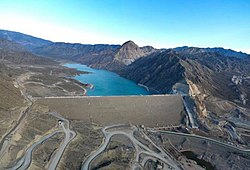
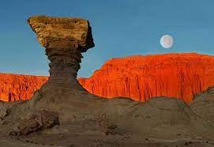

San Juan
El dique Punta Negra es el escenario natural elegido por excelencia para realizar diferentes deportes acuáticos, como snorkel, buceo, kayak, stand up paddle, entre otros. Otra de las atracciones divertidas para estas vacaciones es dar un paseo en hidropedales por las aguas cristalinas del dique.

La Casa Natal de Domingo Faustino Sarmiento. Primer Monumento Histórico Nacional, declarado por ley Nacional N° 7062 el 7 de septiembre de 1910, abriendo sus puertas el 4 de abril de 1911 como Museo Casa Natal de Sarmiento en la Ciudad de San Juan.
El Parque Provincial de Ischigualasto, también llamado Valle de la Luna, se ubica en el noroeste de Argentina. Sus paisajes desérticos similares a la superficie lunar tienen formaciones rocosas impresionantes en áreas como el “Valle Pintado” y la “Cancha de Bochas”.
